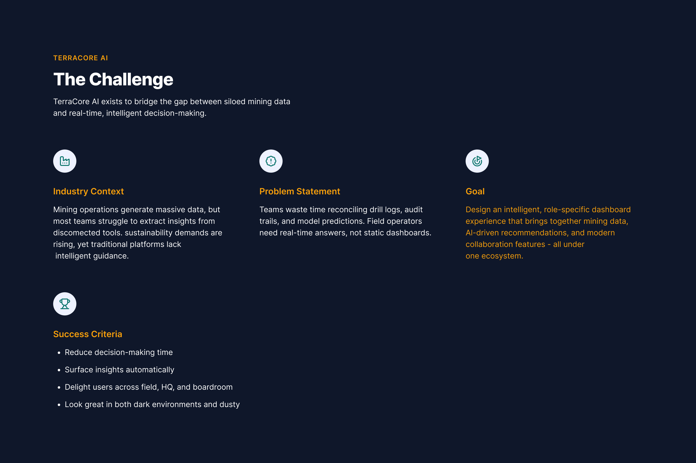
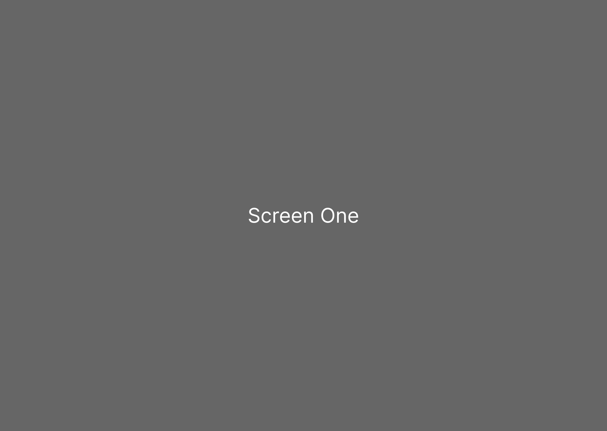

My Portfolio
Click on any project to view details

AKM SecureKey
Enterprise key management platform with 400% increase in demo requests

TerraCore AI
AI-powered geospatial analytics reducing analysis time by 90%

Katipult
Investment platform streamlining capital raising for startups

FinTrust Capital
Wealth management platform with personalized investment strategies

Remindry
Smart reminder app helping users stay organized and productive